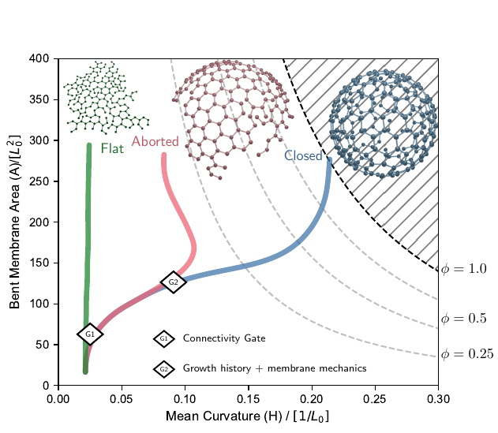
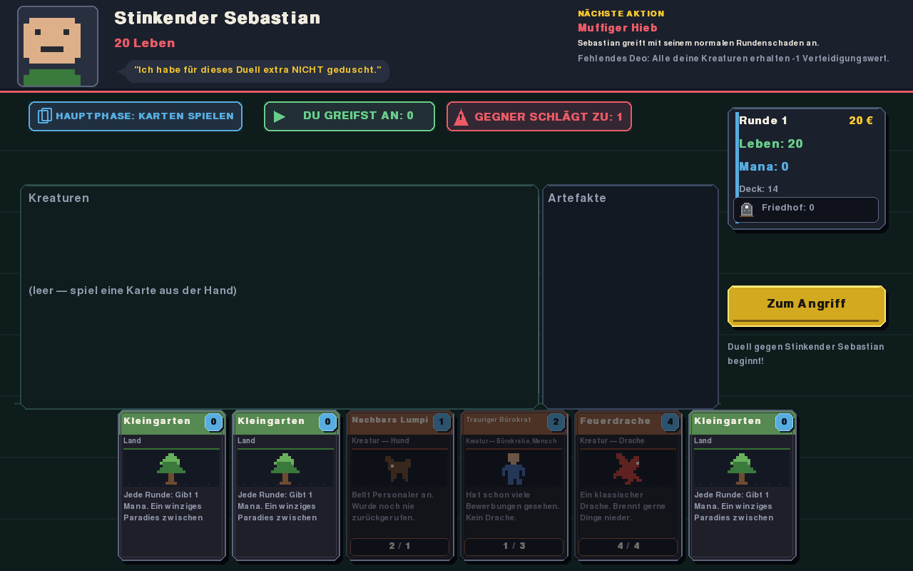

Research explainer
Visual guide to clathrin-mediated endocytosis
A guided version of my first preprint, built for readers who want the core mechanics, figures, and simulations without starting from the full manuscript.
Research explainers, software experiments, and playable things I want to keep visible.

A guided version of my first preprint, built for readers who want the core mechanics, figures, and simulations without starting from the full manuscript.

Playable prototype Day job. Night duel. Enter the current build →